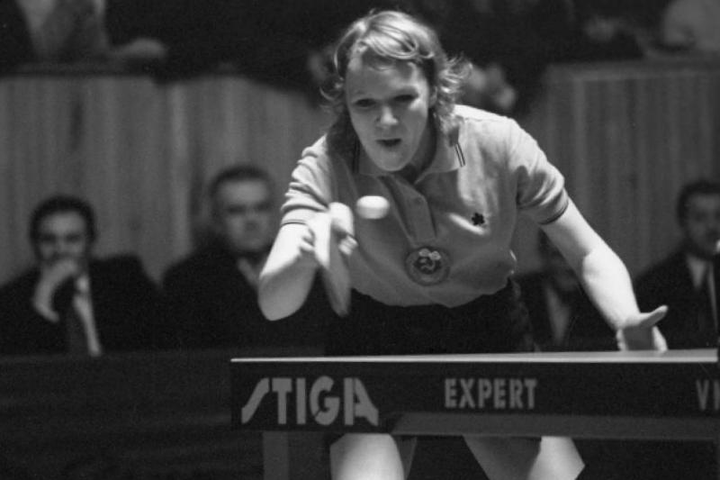

Зоя Николаевна Руднова (19 августа 1946 года) — советская спортсменка, игрок в настольный теннис, двукратная чемпионка мира, 10-кратная чемпионка Европы и рекордсменка по числу золотых медалей чемпионатов Европы. Заслуженный мастер спорта СССР (1969)
Светлана Георгиевна Фёдорова (8 октября 1944) — советская спортсменка, игрок в настольный теннис, двукратная чемпионка мира (1969 год, в командном и парном разрядах), трёхкратная чемпионка Европы, неоднократная чемпионка СССР. Заслуженный мастер спорта СССР (1969)